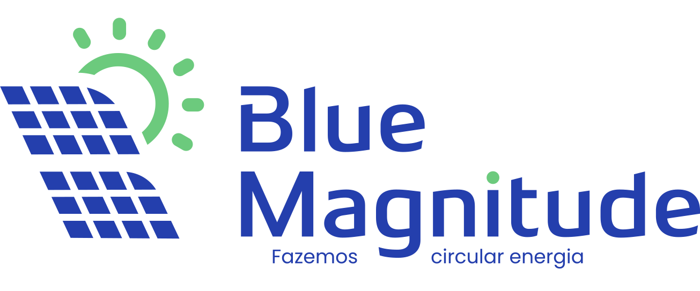

Um agente treinado com o vosso tom, que responde a mensagens e a comentários no WhatsApp, no Instagram e no Facebook, faz as perguntas base que a vossa equipa já faz hoje e entrega a lead qualificada ao comercial da zona, dentro do Reonic. A orçamentação continua vossa.
A Blue Magnitude não tem falta de procura. Tem um gargalo entre a procura e a primeira resposta.
WhatsApp, Instagram e Facebook, cada um com a sua aplicação. Os comentários dos anúncios ficam ainda noutro lado.
A localidade, o valor da fatura e o tipo de instalação só aparecem já dentro da chamada. A qualificação faz-se ao telefone, uma a uma.
Sai um vídeo novo, ou um criador parceiro publica um story, e as mensagens chegam todas ao mesmo tempo.
As campanhas são ajustadas ao que a equipa consegue processar. É o atendimento a limitar o marketing, e não o contrário.
As leads são repartidas à mão, por distrito. Quando entram muitas da mesma zona, o equilíbrio faz-se a olho.
O escritório trabalha das 9h às 18h. Quem manda mensagem às 22h fica à espera, e entretanto pergunta a mais duas empresas.
"O interesse efetivo da resposta e do contacto rápido é em mensagens e comentários. Esse é o principal interesse."
Ivo Santos, reunião de 8 de setembro de 2026
O problema não é gerar procura. É o tempo que a procura demora a receber resposta.
Sem tirar uma pessoa da equipa e sem mudar a forma como vocês vendem.
À esquerda, o que o cliente vê. À direita, o que o agente está a pensar e a fazer em cada passo. Carreguem nos separadores para saltar entre os cenários.
Simulação do comportamento que vamos configurar. Os nomes, moradas e valores em euros são inventados, só para ilustrar. O agente usa sempre a informação real que construirmos convosco.
O Reonic tem API disponível, o que nos permite escrever diretamente na vossa base, sem intermediários e sem uma segunda folha para a equipa manter.
Tudo o que entra fica no mesmo ecrã, com o histórico do contacto e a etiqueta do serviço. A equipa deixa de saltar entre aplicações e passa a ver a fila de trabalho de uma vez.
A vossa preocupação foi soar a robô e perder o lado consultivo da venda. Estas regras existem precisamente para isso não acontecer.
Nunca apresenta um valor, mesmo quando o cliente insiste. O orçamento é feito pela vossa equipa, com o consumo real e a cobertura. Foi a vossa decisão na reunião e passa a ser uma regra fixa do agente.
Responde a partir da base construída convosco nas duas semanas de escuta. Quando não sabe, diz que não sabe e encaminha. Preferimos honesto a errado, sobretudo em prazos, garantias e legalização.
Reclamações, clientes empresa, casos fora do padrão e qualquer compromisso passam a uma pessoa. E o agente diz ao cliente que está a passar, em vez de desaparecer a meio da conversa.
Preferimos dizer isto agora do que prometer o que não se cumpre.
Nada disto faz parte da proposta de agora. Fica registado porque foi falado, e porque a base que construímos nesta fase já serve para o passo seguinte.
As 45 a 50 leads por dia que entram pelo website, pelas landing pages e pelos formulários instantâneos da Meta, com a mesma triagem que o agente já faz nas mensagens.
A regra de zonas que hoje é aplicada à mão, com equilíbrio de carga entre comerciais do mesmo distrito. Estudamos o vosso processo antes de propor seja o que for.
Voltar às leads que ficaram pelo caminho nos últimos meses, com uma campanha de mensagens controlada. Tem custo de envio próprio da Meta, orçamentado à parte.
Os pressupostos são vossos. Mexam nos cursores até baterem certo com o que veem no Reonic. Os valores por omissão são os que falámos na reunião.
Com os valores por omissão, um único negócio recuperado por mês paga a implementação inteira e ainda sobra. A pergunta não é quanto custa isto. É quanto está a custar a mensagem que entra às 22h e fica sem resposta até segunda-feira.
Mais de 60 clientes. Estes três são os que se parecem com o vosso caso.
O mesmo receio que o Ivo levantou: soar a robô num serviço que se vende com pessoas. Os comentários dos anúncios passaram a virar conversa privada e marcação, com a equipa a entrar só no fim.
Ver o caso completo no nosso siteCentenas de comentários por mês vindos de campanhas pagas no Instagram e no Facebook, misturando pedidos de orçamento, dúvidas e reclamações. É o vosso padrão de picos.
Ver o caso completo no nosso siteEmpresa de energia solar com leads de campanhas Meta e cobertura por zonas. O agente faz as perguntas base, resolve o concelho e entrega ao comercial certo com o resumo da conversa. Por respeito ao contrato, não identificamos o cliente nesta página.
Primeira fase, a que o Ivo definiu como prioridade: mensagens e comentários.
Incluindo já os formulários e o resto da qualificação, a implementação fica entre os 3.500 € e os 4.000 € + IVA, e a avença perto dos 300 € + IVA. Não é o que propomos hoje. A nossa metodologia é arrancar com o âmbito mais pequeno que resolve o problema real e crescer depois, se fizer sentido.
Cinco a seis semanas, com a vossa equipa envolvida a partir da quinta.
Fechando esta semana, o agente entra ao serviço antes do fim de outubro, com as duas semanas de escuta já feitas. Fica só a faltar decidir convosco, com o Filipe, por onde começa a escuta.
Falar com o Diogo Gonçalves →